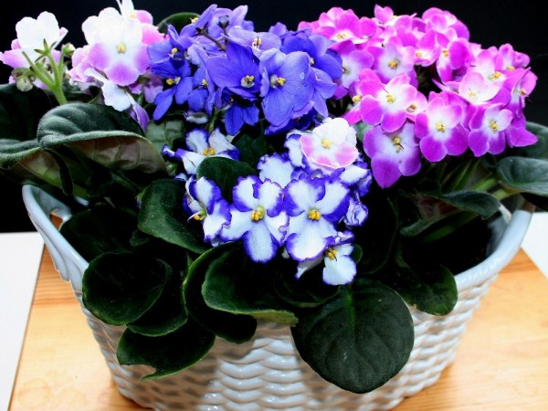
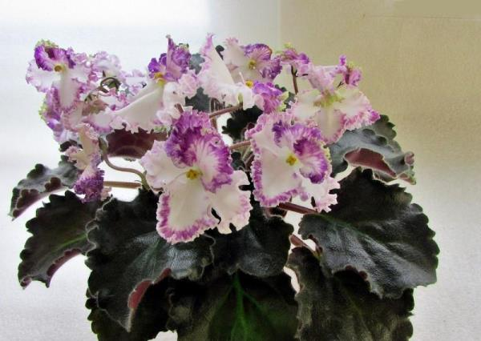
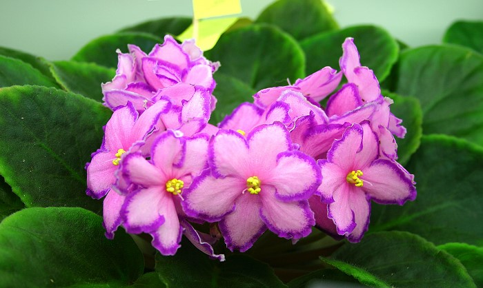
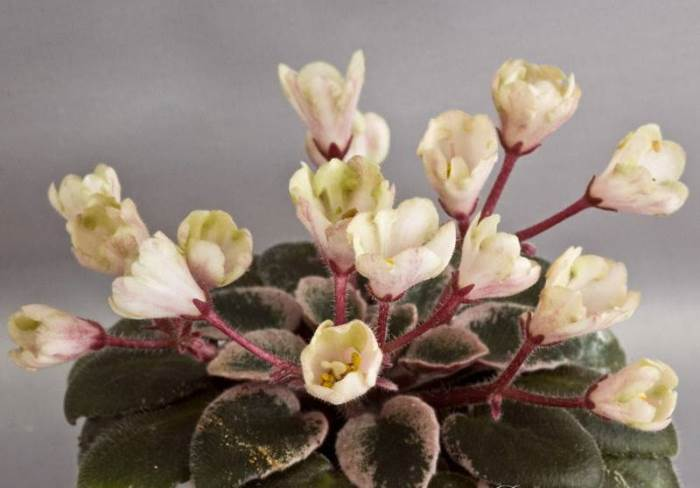
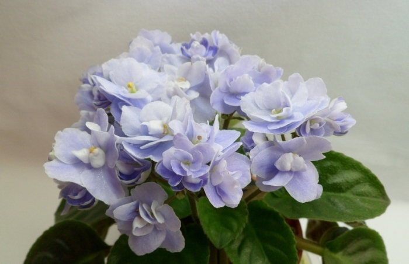
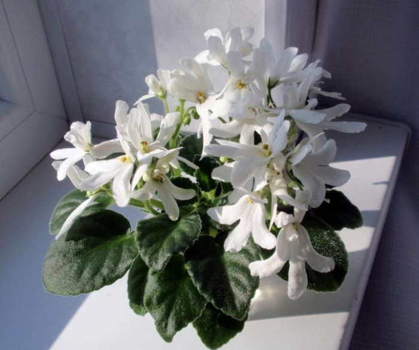

Уход за фиалками
- Температура выращивания
Оптимальная температура окружающей среды, комфортная для ее выращивания, должна находиться в пределах 20 – 25 °C.
- Влажность окружающего воздуха
Рекомендуется повышенная влажность, 50-60%
- Освещение
Света должно быть достаточно, но он должен быть рассеянный. Прямые лучи солнца губительны для растения.
- Полив
Полив фиалок следует проводить отстоянной водопроводной водой комнатной температуры. Также подойдет кипяченая вода, так как при кипячении большая часть вредных солей разлагается и выпадает в осадок. Для комнатной фиалки не советуем применять традиционный способ полива — в розетку. Вода не должна попадать на листья и точку роста, чтобы не спровоцировать грибковое заболевание цветка.
Комнатные Фиалки (Сенполии) настолько популярны, что трудно найти квартиру, где бы на подоконниках не стояли горшочки с этими замечательными цветущими растениями. Их разнообразие поражает.

Существует множество сортов фиалок, различающихся по размеру, форме цветов, количеству и цвету лепестков. При чем один и тот же сорт может принадлежать к нескольких группам. Сейчас мы с вами попробуем разобраться в классификации комнатных фиалок.
Классификация сортов фиалок
- По размеру розетки
- Микро мини: диаметр розетки до 8 см
Мини: диаметр розетки не превышает 12-15 см
- Полумини: диаметр розетки до 20 см
- Стандарт: розетка 20-40 см в диаметре
- По размеру цветка
- Мелкоцветковые: до 2 см
- Среднецветковые: от 2 до 4 см
- Крупноцветковые: от 4 до 6 см
- Особо крупноцветковые: более 6 см
- Типы по форме цветов
- Aнютины глазки

- Звезда

- Колокольчик

- Чаша

- Оса

Немного истории
Впервые, это неизвестное науке растение обнаружил в 1892 году на территории Танзании комендант Узамбарского округа Германской Восточной Африки Вальтер фон Сен-Поль. Цветок рос в расщелине оврага прямо на замшелом камне. Формой и окраской лепестков цветок напоминал известную в то время фиалку, но был намного нежнее.
Вальтер собрал семена растения и выслал их своему отцу Ульриху фон Сен-Полю в Германию, который был там президентом Германского дендрологического общества. Тот, в свою очередь, передал эти семена Герману Велдланду, директору ботанического сада в Ганновере. Вендланд вырастил из семян цветок и в 1893 году описал его с именем «Сенполия фиалкоцветная или фиалкоцветковая» (Saintpaulia ionanta) в честь Вальтера фон Сен-Поля, выделив этот вид в отдельный род. В этом же году им была написана статья, посвященная Сенполии, опубликованная в журнале «Gartenflora».